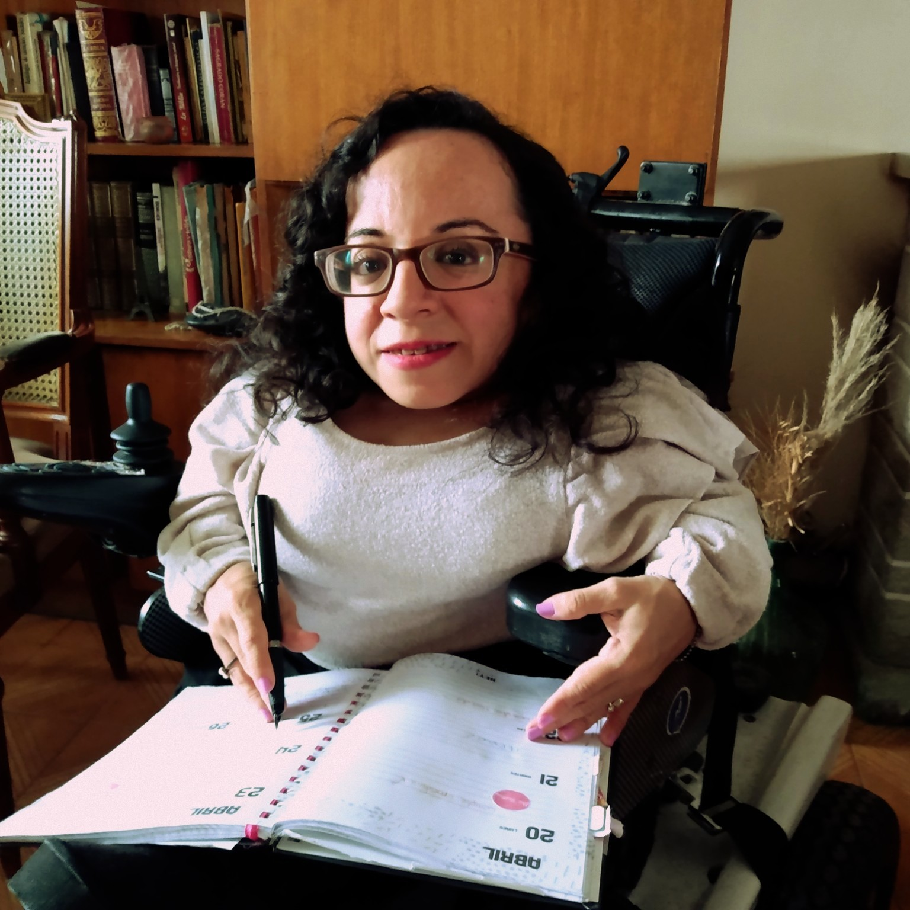

Soy Anahi Perez. Me recibí de Licenciada y Profesora en Comunicación Social en la Universidad Nacional de Cuyo. Tengo 38 años. Nací con una enfermedad llamada Osteogénesis Imperfecta que hace que mis huesos sean muy frágiles por la falta de colágeno, también se la conoce como la enfermedad de los huesos de cristal. Actualmente trabajo bajo la modalidad de teletrabajo (desde casa).
